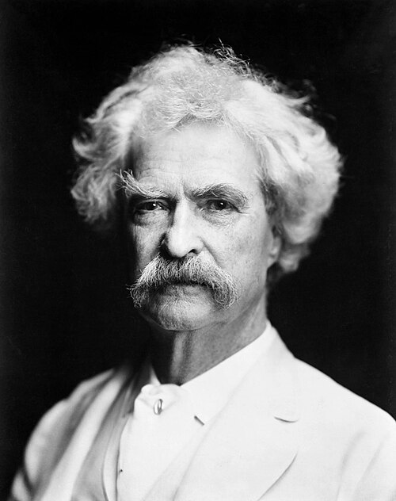

Mark Twain var en amerikansk forfatter og humorist.
Mark Twain var blot hans alias. Hans rigtige navn var Samuel Langhorne Clemens.
Twain betyder to og “Mark Twain” var noget han hørte som barn efter at de lokale matroser råbte idet de målte vandet.